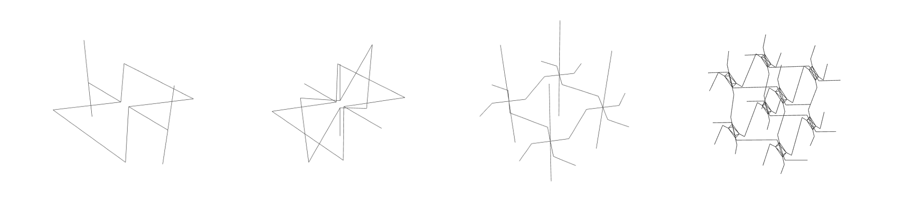
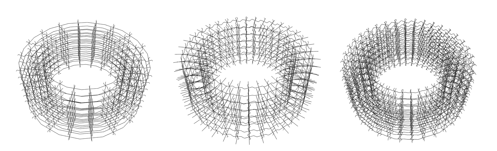
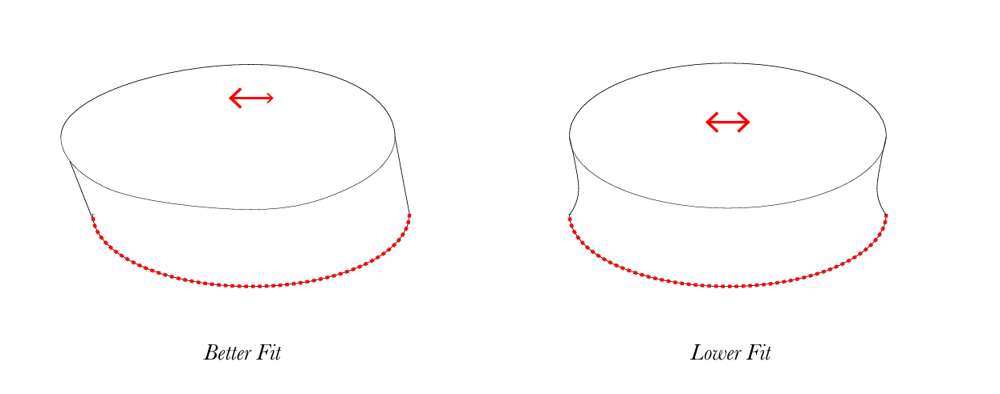
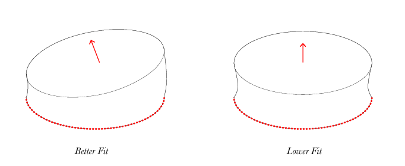
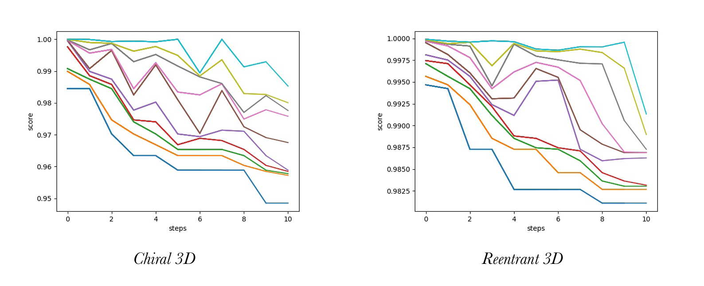
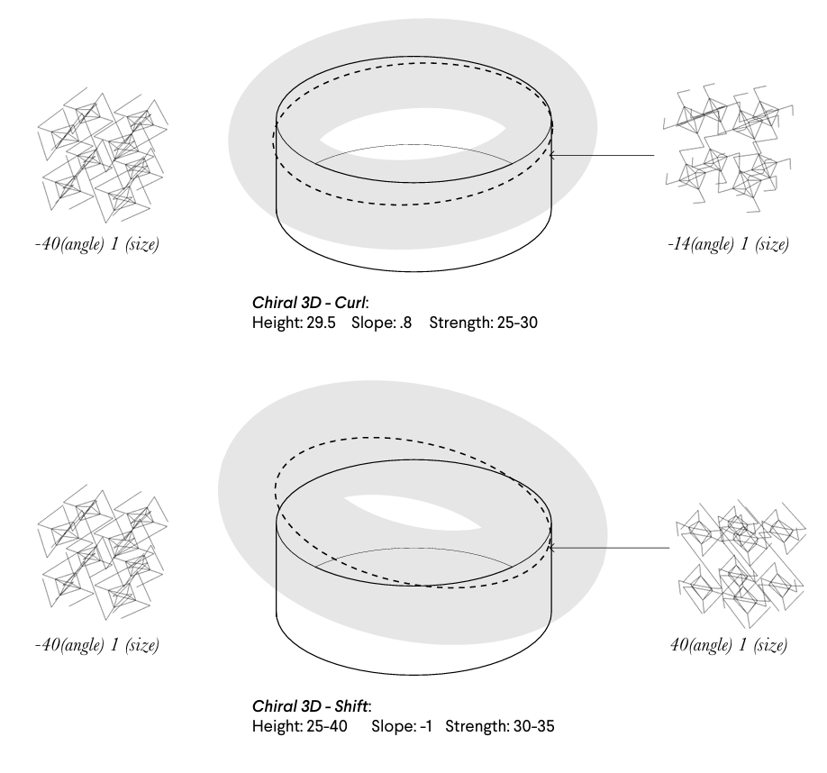
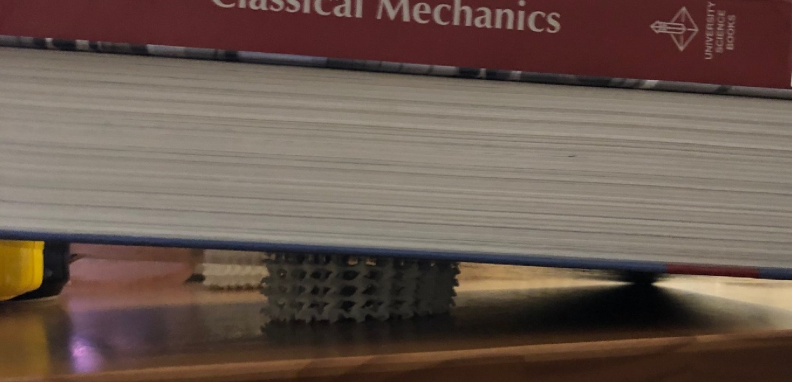

Adidas wanted to explore 3D lattice structures that naturally shear forward as the user walked. So, we developed an
approach combining stochastic gradient descent with an open-source FEA program (Calculix) to automatically determine
the optimal lattice solution based on a custom loss function.


A script was built to create 2'' diameter pucks of different lattice types and run them through a simulation pipeline
that would converge to the optimal solution.


We created two custom loss functions based on a simple static compression simulation to score the lattice's
effectiveness at shearing forward. The first function measured how much the top of the lattice volume tilted forward,
and the second function measured how much the top face shifted sideways.

A simulation pipeline that removed lattice options with extensive stresses was created,
and a stochastic gradient descent algorithm tracked the highest performing lattices until a minimum was found.

Two iterations were chosen based on the two different loss functions. Based on the results, the chiral lattices proved to be more effective, with a slight
variation in bend angle across the puck, providing the best opportunity for shearing forward.

The results were printed, and we did an ad hoc test at the beginning of COVID in my small apartment.
Under simple compression, the results showed that the optimal lattice solution did produce the desired shearing behavior.